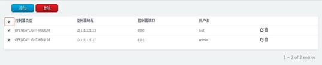
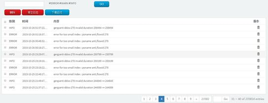
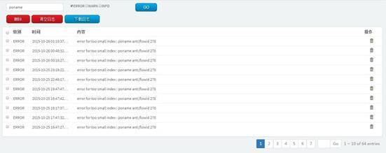

本章介绍通过web方式登录天盾Anti-DDoS系统的方法以及天盾Anti-DDoS系统的管理菜单。主要内容有：
l 登录和注销系统：如何登录与注销天盾Anti-DDoS系统；
l 天盾Anti-DDoS系统的管理菜单：了解天盾Anti-DDoS系统所具有的功能项
建议用户使用Internet Explorer 9.0及以上版本、Google Chrome、Firefox等浏览器。
假设安装天盾Anti-DDoS系统的电脑IP地址为：10.111.121.47，那么在浏览器地址栏中输入10.111.121.47，即可访问本系统。如图 3‑1所示：
图 3‑1 登录系统界面
1. 在用户名栏中输入用户名（可以使用默认的用户名：admin）；
2. 在密码栏中输入密码（默认的密码：admin）；
3. 如果勾选“记住我”复选框，那么下次登录的时候将不需要再次输入用户名和密码；
4. 单击“登录”，如果用户名、密码正确即可登录管理页面；如果用户名或者密码或者用户名密码都不正确，那么在密码输入框下方将提示错误信息。如图 3‑2所示：
图 3‑2 用户名或密码错误提示界面
如果想要退出当前系统，单击屏幕右上方的用户名处，然后在显示的下来菜单项中点击“注销”菜单项即可退出当前系统，如图 3‑3所示：
图 3‑3 注销系统
本节内容主要描述的用户在使用天盾Anti-DDoS系统过程受到各类攻击的一些基本情况，采用图形和列表的形式来展示用户在使用本系统的过程中受到的一些攻击情况以及本系统采取的措施。图像直观的展现了用户在使用本系统过程中受到的攻击的总体情况，列表详细的列出了用户受到的具体攻击情况。本节主要包括了速率正常与异常次数、检测次数占比、协议攻击占比、最近攻击防御事件、攻击详细列表等。
该部分主要展示了当前受保护对象速率正常与异常次数，受到攻击的具体次数以及Anti-DDoS应用启动攻击防御的具体次数等总体情况，如图 3‑4所示。
图 3‑4 速率正常与异常次数
该部分主要展示的是正常速率次数、异常速率次数、攻击次数各自占总的检测次数的比例情况，如图 3‑5所示。
图 3‑5 检测次数占比
本部分展示了受保护对象在使用天盾Anti-DDoS系统之后受到的TCP、UDP、ICMP以及其他IP协议攻击次数在总的攻击次数中的比例，如图 3‑6所示。

图 3‑6 协议攻击占比
最近攻击防御事件部分主要列出了天盾Anti-DDoS系统检测到受保护对象是否受到攻击、启动防御、停止防御等一系列措施等事件，受到攻击以及采取措施的时间、攻击的对象、攻击流量使用的协议方式、攻击的速率以及系统检测到攻击或者攻击取消时采取何种防御措施，如图 3‑7所示。
图 3‑7 最近攻击防御事件
攻击详细列表向用户详细描述了受到攻击的对象、保护对象所使用的协议方式、用户在使用天盾Anti-DDoS系统之后流量速率正常的次数、流量速率异常的次数、受保护对象受到的攻击次数、天盾Anti-DDoS系统启动防御的次数以及系统在检测到攻击消除之后启动防御恢复的次数，具体情况如图 3‑8所示。
图 3‑8 攻击详细列表
天盾Anti-DDoS系统策略管理菜单包含：控制器、网络节点、保护对象三个菜单项。
l 控制器（Controller）：配置Anti-DDoS应用所需的控制器的相关信息；
l 网络节点（Netnode）：配置Anti-DDoS应用中所需的交换机（switch）的相关信息；
l 保护对象（PO）：配置Anti-DDoS应用需要保护的网络或者单个对象。
点击控制器菜单项将显示当前已经配置的控制器信息，在控制器显示页面还可以通过相应的功能键按钮实现添加、编辑、删除控制器相关配置信息等功能。控制器显示页面如图 3‑9所示：
图 3‑9 控制器显示页面
3.3.1.1 添加控制器
如果想要添加新的控制器信息，可以点击控制器显示页面上方的“添加”按钮来增加新的控制器配置信息，添加页面如图 3‑10所示。
配置页面中标有红色星号的项为必填项，如果必填项没有填写，当光标移开该必填项时将提示不能为空的提示，或者用户输入的信息有误时也会提示用户输入有误，在点击保存的时候如果检测到有必填项为空或者有误时也会提示错误，要求用户填写或者更改对应的配置。
图 3‑10 添加控制器页面
添加控制器信息主要步骤：
1. 选择控制器类型，默认为OPENDAYLIGHT-HELIUM，可以通过控制器类型后面的下拉列表框选择所需的控制器类型；
2. 输入控制器所在设备的IP地址；
3. 输入接入控制器所使用的端口号；
4. 输入登录控制器所在设备的用户名；
5. 输入登录控制器所在设备的密码；
6. 输入检测时间间隔，默认值为60秒；
7. 输入异常次数阀值，如果当前流量值超出流量学习所获得的流量基线值的次数超过配置的阀值时判定为攻击，默认值为3次；
8. 输入异常流量偏差百分比，如果当前流量超出流量学习所获得的流量基线值的百分之多少的时候判定为流量异常，默认值为50%；
9. 输入攻击恢复次数阀值，如果当前流量小于流量学习所获得的流量基线值的次数超过配置的阀值时判定为攻击消除，需要恢复到正常状态，默认值为3次；
10. 单击“保存”按钮保存新增的配置到数据库中，单击“返回”按钮将返回到控制器显示页面。
3.3.1.2 编辑控制器
如果需要对已经配置好的控制器进行修改，可以在显示页面上找到对应需要修改的控制器，然后点击末端的编辑功能键即可进入到编辑状态，根据需要修改相应的字段即可，编辑完成之后点击保存即可将修改后的配置保存到数据库中。编辑页面将显示之前已经配置的配置信息，如图 3‑11所示。
图 3‑11 编辑控制器页面
编辑控制器主要步骤：
1. 找到需要修改的控制器一栏，点击末尾的编辑功能键；
2. 进入到编辑页面；
3. 根据需要修改相应的字段，其中标有红色星号的字段为必填项；
4. 点击"保存”按钮保存修改后的配置信息，然后返回到控制器显示页面；
5. 点击“返回”按钮将不会保存已经修改的配置信息，然后返回到控制器显示页面；
3.3.1.3 删除控制器
l 如果要删除某一条控制器配置，有两种实现方法：
1. 选中该条控制器配置信息前的复选框，然后通过上方的“删除”按钮，删除对应的控制器配置信息。
2. 通过该条控制器配置栏末端的删除功能键删除该条控制器配置信息。
l 如果要删除其中多条控制器配置信息时，同时选中需要删除的控制器配置前的复选框，然后点击上方的“删除”按钮，将从数据库中删除选中的控制器配置信息；除此之外，还可以通过逐条删除的方式删除控制器配置信息。显示页面将不会显示已经删除的控制器配置信息。
l 如果要删除全部的控制器配置信息，那么选中控制器显示页面左上角的复选框，那么将选中所有的控制器配置信息，然后点击上方的“删除”按钮，将删除数据库中所有的控制器配置信息，显示页面也将不会显示已经删除的控制器配置信息，如图 3‑12所示

图 3‑12 控制全部删除选择界面
网络节点主要是配置网络中交换机的相关配置、配置该交换机与哪个控制器（Controller）相连，以及在配置保护对象（PO）的时候提供关联的交换机信息。点击网络节点菜单项将显示已经配置好的网络节点配置信息。在网络节点显示页面还可以通过相应的功能按钮实现添加新的、编辑、删除已存在的网络节点相关配置信息等功能。网络节点显示页面如图 3‑13所示。
图 3‑13 网络节点显示页面
3.3.2.1 添加网络节点
如果要添加新的网络节点信息，点击网络节点显示页面上方的“添加”按钮来增加新的网络节点配置信息，添加页面如图 3‑14所示。
配置页面中标有红色星号的项为必填项，如果必填项没有填写，当光标移开该必填项时将提示不能为空的提示，或者用户输入的信息有误时也会提示用户输入有误，在点击保存的时候如果检测到有必填项为空或者有误时也会提示错误，要求用户填写或者更改对应的配置。
图 3‑14 网络节点添加页面
添加网络节点信息主要步骤：
1. 输入交换机名字，可以是任意的字符与数字，但是不能与已有的交换机名字相同；
2. 输入交换机ID号，该值需要在交换机上查询，不能随意输入；
3. 选择控制器ID，通过下拉列表框选择该交换机需要连接的控制器ID值，控制器ID的值是前面已经配置好的，所有已经配置的控制器都将显示在下拉列表框中，根据实际需求选择控制器ID；
4. 点击“保存”按钮将新增的配置信息保存到数据库中，然后返回到网络节点显示页面；
5. 点击“返回”按钮将不会保存已经输入的配置信息，然后返回到网络节点显示页面；
3.3.2.2 编辑网络节点
如果需要对已经存在的网络节点进行修改，可以在显示页面上找到需要修改的网络节点配置信息，然后点击末端的编辑功能键即可进入到编辑状态，根据需要修改相应的字段即可，修改完成之后点击保存按钮将修改之后的配置信息更新到数据库中。编辑页面将显示之前已经配置的信息，如图 3‑15所示。
图 3‑15 网络节点编辑页面
编辑网络节点主要步骤：
1. 找到需要修改的网络节点一栏，点击末尾的编辑功能键；
2. 进入到编辑页面；
3. 根据需要修改相应的字段，其中标有红色星号的字段为必填项；
4. 点击“保存”按钮保存修改后的配置信息；
5. 点击“返回”按钮将不会保存修改的配置信息，然后返回到网络节点显示页面；
3.3.2.3 删除网络节点
l 如果要删除某一条网络节点配置，有两种实现方法：
1. 选中该条网络节点配置信息前的复选框，然后通过上方的“删除”按钮，删除对应的网络节点配置信息。
2. 通过该条网络节点配置栏末端的删除功能键删除该条网络节点配置信息。
l 如果要删除其中多条网络节点配置信息时，同时选中需要删除的网络节点配置前的复选框，然后点击上方的“删除”按钮，将从数据库中删除选中的网络节点配置信息；除此之外，还可以通过逐条删除的方式删除网络节点配置信息。显示页面将不会显示已经删除的网络节点配置信息。
l 如果要删除全部的网络节点配置信息，那么选中网络节点显示页面左上角的复选框，那么将选中所有的网络节点配置信息，然后点击上方的“删除”按钮，将删除数据库中所有的网络节点配置信息，显示页面也将不会显示已经删除的网络节点配置信息。删除选择如图 3‑16所示：
图 3‑16 网络节点全部删除
保护对象（PO），主要配置保护对象受到某种流量攻击时应该使用何种策略进行处理。在保护对象显示页面通过相应的功能按钮还可以实现添加新的、编辑及删除已存在的保护对象的相关配置信息等功能。保护对象显示页面如图 3‑17所示。
图 3‑17 保护对象显示页面
3.3.3.1 添加保护对象
如果要添加新的保护对象信息，可以点击保护对象显示页面上方的“添加”按钮来增加新的保护对象配置信息，添加页面如图 3‑18所示。
配置页面中标有红色星号的项为必填项，如果必填项没有填写，当光标移开该必填项时将提示不能为空的提示，或者用户输入的信息有误时也会提示用户输入有误，在点击保存的时候如果检测到有必填项为空或者有误时也会提示错误，要求用户填写或者更改对应的配置。
图 3‑18 保护对象添加页面
保护对象添加主要步骤：
1. 输入保护对象的名称：为新增的保护对象取一个名字，不能与已有的名字相同；
2. 输入端口：要保护对象流量流入的端口号；
3. 输出端口：通过配置的输入端口进入到保护对象的流量将通过该端口输出；
4. 保护对象：配置需要保护的具体对象或者一个网络，如：192.168.1.1/32或者192.168.0.0/16;
5. 防御类型：通过下来列表框选择防御的类型，当检测到攻击的时候将按照该类型进行防御，默认值是进行限速操作，除此之外可以根据需要选择进行引流；
6. 引流端口：当防御类型选择为引流时，需要一个引流端口，通过该端口将攻击流量引向其他地方；如果选择限速，则不需要配置该字段；
7. 所属交换机：通过下拉列表框选择该保护对象相关联的交换机（Netnode），该下拉列表框中包含了所有已经配置的交换机名称；
8. 协议：选择需要保护的流量所使用的协议类型，可以是TCP、UDP、ICMP或者任意类型中的一种，也可以是其中的某几种类型，需要保护哪种协议的流量就选中对应协议前的复选框；
9. 设置流量阀值：该阀值可以通过手动设置也可通过自动学习获取，如果选择自动学习流量阀值，那么就选中其对应的单选框；如果选择固定流量阀值那么就需要设置对应的pps以及kbps值，二者只能任选其一；
10. 点击“保存”按钮将新增的配置信息保存到数据库中，然后返回到保护对象显示页面；
11. 点击“返回”按钮将不会保存已经输入的配置信息，然后返回到保护对象显示页面；
3.3.3.2 编辑保护对象
如果需要对已经配置好的保护对象进行修改，可以在显示页面上找到对应需要修改的保护对象，然后点击末端的编辑功能键即可进入到编辑状态，根据需要修改相应的字段即可，但是已经关联的交换机将不能进行修改，如果要修改关联的交换机只有通过新增的方式添加，不能通过编辑方式来配置。编辑页面将显示之前已经配置的配置信息，如图 3‑19所示。
图 3‑19 保护对象编辑页面
编辑保护对象信息主要步骤：
1. 找到需要修改的保护对象一栏，点击末尾的编辑功能键；
2. 进入到编辑页面；
3. 根据需要修改相应的字段，但是关联的交换机信息不能修改；
4. 点击“保存”按钮保存修改后的配置信息；
5. 点击“返回”按钮将不会保存修改的配置信息，然后返回到保护对象显示页面；
3.3.3.3 删除保护对象
l 如果要删除某一条保护对象配置，有两种实现方法：
1. 选中该条保护对象配置信息前的复选框，然后通过上方的“删除”按钮，删除对应的保护对象配置信息。
2. 通过该条保护对象配置栏末端的删除功能键删除该条保护对象配置信息。
l 如果要删除其中多条保护对象配置信息时，同时选中需要删除的保护对象前的复选框，然后点击上方的“删除”按钮，将从数据库中删除选中的保护对象配置信息，显示页面将不会显示已经删除的保护对象配置信息。
l 如果要删除全部的保护对象配置信息，那么选中保护对象显示页面左上角的复选框，那么将选中所有的保护对象配置信息，然后点击上方的“删除”按钮，将删除数据库中所有的保护对象点配置信息，显示页面也将不会显示已经删除的保护对象配置信息，如图 3‑20所示。
图 3‑20 保护对象全部删除
天盾Anti-DDoS系统允许多个用户同时登陆系统，并可以根据不同的角色划分不同的权限。
选择“系统设置”->“用户管理”，进入用户管理显示页面，如图 3‑21所示。页面中将系统中已配置的不同角色的用户信息都显示在页面中，包括用户名、昵称、创建时间、相应的角色信息，并可以通过操作栏中的具体操作对指定的管理员进行编辑与删除操作。除此之外还可以通过最上方的添加按钮添加新的用户信息；通过“删除”按钮删除一个或多个用户信息。使用角色为ADMIN的用户名登陆可以添加新的角色为ADMIN或者USER的用户信息，但是如果使用角色为USER的用户名登陆系统则只能查看本系统的部分功能且不能添加新的其他用户信息，新添加的用户使用默认的密码：admin。如果要更改用户的默认密码，同使用对应的用户名登陆系统，然后通过系统右上角显示的当前用户名下得“用户属性设置”来更改当前用户的一些信息，如图 3‑22所示：
图 3‑21 用户设置显示页面
图 3‑22 用户属性设置
3.4.1.1 添加用户
当需要添加新的用户信息时，单击页面中的“添加”按钮，进入添加页面，如图 3‑23所示。
图 3‑23 添加用户信息页面
添加用户信息主要步骤：
1. 填写用户名：不能与已有的用户名相同，且不能为空；
2. 填写昵称：为用户填写一个昵称，不能空；
3. 角色：根据需求为用户设置不同的角色，当前可选的为ADMIN与USER；
4. 单击“保存”按钮将配置信息保存到数据库中，并返回到用户信息显示页面；
5. 点击“返回”按钮将直接返回到用户信息显示页面；
3.4.1.2 编辑用户
要修改某个用户配置信息时，在用户设置配置显示页面中找到对应用户信息记录，然后点击操作栏对应的“编辑”功能键，进入编辑页面，如图 3‑24所示图 3‑24。
图 3‑24 编辑用户信息页面
编辑管理员配置主要步骤：
1. 用户名：修改用户的用户名，但是不能与其他用户名相同；
2. 昵称：修改用户的昵称；
3. 登陆密码：如果要重置用户的登陆密码时，可点击“重置密码”按钮，将用户登陆密码重置到默认登陆密码：admin；
4. 角色：根据需要修改用户的角色；
5. 单击“保存”按钮完成修改，将修改后的配置信息保存到数据库中，并返回到用户管理显示页面；
6. 单击“返回”按钮不保存修改后的配置信息，直接返回到用户管理显示页面；
3.4.1.3 删除用户
l 如果要删除某一条用户配置信息，有两种实现方法：
1. 在用户管理显示页面中找到需要删除的管理员配置信息一栏然后单击该记录末端的“删除”功能键即可从数据库中删除该用户信息，显示页面将不显示已经删除的配置信息。
2. 选中该记录前的复选框，单击上方“删除”按钮即可从数据库中删除该用户信息，显示页面将不显示已经删除的配置信息。
l 如果要删除其中多条用户信息时，同时选中需要删除的用户信息前的复选框，然后点击上方的“删除”按钮，将从数据库中删除选中的用户配置信息；除此之外，还可以通过逐条删除的方式删除用户配置信息。显示页面将不会显示已经删除的用户配置信息。
l 默认的用户名（admin）是不能被删除的，所以在显示页面中不能全部选中，然后点击“删除”按钮删除全部用户信息。
3.4.1.4 用户属性设置
如果要对当前用户属性进行修改，点击页面右上角显示当前用户名的地方将出现下来框，如图 3‑25所示，然后选中用户属性设置菜单项即可进入到用户属性显示页面，点击图 3‑26中的编辑按钮即可进入到用户属性设置页面如图 3‑27所示。
图 3‑25 选择用户属性设置
图 3‑26 用户属性显示页面
图 3‑27 编辑用户属性
编辑用户配置主要步骤：
1. 用户名：不能修改用户名；
2. 昵称：修改当前用户的昵称；
3. 登陆密码：如果要修改用户的登陆密码点击“修改密码”按钮页面中将新增新的密码和确认密码输入框，如图 3‑28所示；
图 3‑28 用户登陆密码修改
1. 新密码：如果点击了“修改密码”按钮之后会出现该输入框，在框中输入新的密码即可；
2. 确认密码：与上面输入的密码一致即可；
3. 角色：用户角色不能修改；
4. 完成修改后，单击“保存”按钮，将修改后的信息保存到数据库中，并返回到用户属性显示页面；
5. 单击“返回”按钮不保存修改后的配置信息，直接返回到用户属性显示页面；
天盾Anti-DDoS系统允许系统管理员对系统配置进行备份处理，将备份文件下载保存；此外，在系统出现故障或想要恢复到某一指版本的配置时，可以通过本系统导入已备份的配置文件进行恢复。具体的备份和恢复功能操作页面如图 3‑29所示。
图 3‑29 备份与恢复页面
3.4.2.1 备份
如果要对系统配置信息进行备份操作，可以通过“系统设置”->“备份恢复”菜单项进入到备份与恢复页面，然后点击页面中的“下载配置”按钮，点击之后将会对系统配置信息下载到浏览器默认的下载路径下，如果下载配置信息成功，页面中将会出现“备份配置信息成功！”的消息提示，如图 3‑30所示。
图 3‑30 下载配置
3.4.2.2 恢复
当系统出现故障或系统管理员想要恢复到某一指定版本的配置时，可以通过本系统导入已备份文件进行恢复。选择“系统设置”->“备份恢复”菜单项进入到备份与恢复页面，点击页面下方的“选择文件”按钮选择备份文件，然后点击“恢复”按钮即可将系统配置信息回复到与备份文件相同，如果恢复成功页面中会出现“恢复配置信息成功！”的消息提示，如图 3‑31所示。

图 3‑31 恢复配置
如果想要查看受保护对象或者网络的历史流量，那么请点击左侧的“流量”->“历史流量”菜单项。在“历史流量”页面中选择要观察的保护对象以及相应的协议，然后点击“提交查询”按钮，如果查询的数据存在，那么在页面上即可展示出受保护对象以及该协议的一小时、一天、一周、月、年等相关的流量数据信息，如图 3‑32所示。
图 3‑32 历史流量图
如果想要查看受保护对象或者网络的流量基线值情况，那么请点击左侧的“流量”-> “流量基线”，在页面顶端选择要查看的受保护对象以及协议，然后点击“提交查询”按钮即可在页面中看到相关的流量基线图，如图 3‑33所示。
图 3‑33 流量基线图
流量基线值的学习周期为一周，即7*24共168个流量值。图中展示了在流量基线值学习成功之后一周内不同时间段的流量基线值情况。
系统日志记录了Anti-DDoS应用软件系统的运行日志，要查看系统日志请选择左侧 “日志”->“系统日志”，进入系统日志查看页面，如图 3‑34所示。

图 3‑34 系统日志界面
3.6.1.1 查询系统日志
如果要在系统日志中查询日志中包含某些关键字的日志时，在查询输入框中输入需要查询的关键字，然后选择日志的类型（ERROR、INFO、DEBUG）前对应的复选框即可，然后点击“GO”按钮，在系统日志页面中将呈现查询的结果，如图 3‑35所示。

图 3‑35 查询系统日志
因为系统日志较多，如果想要查看后面的日志信息，那么可以通过页面下方的页数按钮，或者在输入框中输入第几页日志信息对应的数字后然后点击“GO”按钮即可显示对应的日志信息。
3.6.1.2 删除日志
如果要删除某条或者某几条系统日志信息，只需选中需要删除的日志信息前的复选框，然后点击页面上方的“删除”按钮。在删除前会弹出一个确认对话框，如果选择“OK”那么将删除数据库中选中的系统日志信息，然后返回到系统日志显示页面；如果选择“Cancel” 那么将直接返回到系统日志显示页面。
此外，也可以通过每一条日志末端的删除功能键删除想要删除的日志信息。
3.6.1.3 清空日志
如果想要清空所有的系统日志，可以通过页面上方的“清空日志”按钮来删除所有的系统日志信息。在删除前会弹出一个确认对话框，如果选择“OK”那么将删除数据库中所有的系统日志信息，然后返回到系统日志显示页面；如果选择“Cancel” 那么将直接返回到系统日志显示页面。
3.6.1.4 下载日志
如果想要下载系统日志信息，可通过系统日志显示页面上方的“下载日志”按钮将所有的系统日志下载到本地进行查看。
操作日志记录了当前用户通过天盾Anti-DDoS系统进行的所有的操作记录，要查看操作日志选择页面左侧“日志”->“操作日志”，进入操作日志查看页面，如图 3‑36所示。
图 3‑36 操作日志界面
3.6.2.1 查询日志
如果要在操作日志中查询日志中包含某些关键字的日志时，在查询输入框中输入需要查询的关键字，然后选择日志的类型（ERROR、INFO、DEBUG）前对应的复选框即可，然后点击“GO”按钮，在操作日志页面中将呈现查询的结果。如图 3‑37所示。
图 3‑37 查询操作日志
3.6.2.2 删除日志
如果要删除某条或者某几条日志信息，只需选中需要删除的日志信息前的复选框，然后点击主页上方的“删除”按钮。在删除前会弹出一个确认对话框，如果选择“OK”那么将删除数据库中所有的操作日志信息，然后返回到操作日志显示页面；如果选择“Cancel” 那么将直接返回到操作日志显示页面。
此外，也可以通过每一条日志末端的删除功能键删除日志信息。
3.6.2.3 清空日志
如果想要清空操作日志，可以通过页面上方的“清空日志”按钮来删除所有的操作日志信息。在删除前会弹出一个确认对话框，如果选择“OK”那么将删除数据库中所有的操作日志信息，然后返回到操作日志显示页面；如果选择“Cancel” 那么将直接返回到操作日志显示页面。
3.6.2.4 下载日志
如果想要下载操作日志信息，可通过操作日志显示页面上方的“下载日志”按钮将所有的操作日志下载到本地进行查看。
我们为用户准备了中文和英语两种不同语言的web管理页面。如果用户使用的语言非中文时候，用户在登录天盾Anti-DDoS系统之后需要点击页面右上角的“中文”菜单然后在出现的菜单项中选择“English”进行中英文界面的切换，以便给用户呈现更好的管理界面。如图 3‑38所示：
图 3‑38 中英文切换
如果用户想要获得关于天盾Anti-DDoS系统的帮助信息，在用户登录系统之后点击右上角的“帮助”菜单，然后在出现的页面中将提供关于天盾Anti-DDoS系统的一些帮助信息，如图 3‑39所示。
图 3‑39 帮助
APPENDIX1 专业术语表
D
DDoS
DDoS：分布式拒绝服务(DDOS: Distributed Denial of Service)攻击指借助于客户/服务器技术，将多个计算机联合起来作为攻击平台，对一个或多个目标发动DDOS攻击，从而成倍地提高拒绝服务攻击的威力。
N
Netnode
网络节点，即网络中的交换机或者类似于交换机的网络设备。
O
ODL
ODL全称是OpenDaylight 。Opendaylight是 Linux 基金会的一个合作项目。OpenDaylight开源项目的架构主要包括：与SDN基础设施层对应的数据平面网元（例如虚拟交换机、物理设备等），以及相应的南向接口（例如OpenFlow等标准协议及一些厂商专有的接口）；与SDN控制层对应的控制平台层及相应的基于REST的OpenDaylight API北向接口；与SDN应用层对应的网络应用、编排和服务层。OpenDaylight开源项目的主要内容包括SDN控制器开发、南北向接口API的扩展、用于多个控制器关联的东西向协议实现等。
OpenFlow
OpenFlow 是一个开放的，基于一定标准的南向协议。OpenFlow起源于2008年斯坦福大学，目前已成为主流SDN南向接口协议。它定义了如何由一个中心部件（控制器）对控制平面进行配置和控制。通过使用 OpenFlow，控制器可以管理数据包在网络中的传输。OpenFlow 最主要的组件是： OpenFlow 控制器， OpenFlow 交换机， OpenFlow 协议。
P
PO
PO全称是Protect Object，即保护对象。
PN
PN全称是Protect Network，即保护网络。
S
SDN
SDN全称是Software Defined Network，即软件定义网络，是由美国斯坦福大学clean slate研究组提出的一种新型网络创新架构，其核心技术OpenFlow通过将网络设备控制面与数据面分离开来，从而实现了网络流量的灵活控制，为核心网络及应用的创新提供了良好的平台。SDN本质上具有“控制和转发分离”、“设备资源虚拟化”和“通用硬件及软件可编程”三大特性。
APPENDIX2 常见问题解答
Q: 天盾Anti-DDoS系统Web管理对浏览器的要求？
A: 建议用户使用Internet Explorer 9.0及以上版本、Google Chrome、Firefox浏览器。
Q: 天盾Anti-DDoS系统Web管理默认的管理员用户名和密码是什么？
A：天盾Anti-DDoS系统web管理提供了一个默认的超级管理员帐号，其默认的用户名和密码都是：admin。
Q：为什么我不能登录Web管理界面？
A：请确认是否存在以下几个问题：
l 确认网络通讯正常；
l 确认浏览器为Internet Explorer 9.0及以上版本、Google Chrome、Firefox等浏览器；
l 确认设备是否开启了Tomcat功能；
l 确认用户名和密码是否正确；
l 采用 https://[运行天盾Anti-DDoS系统的IP 地址]进行访问；
Q：为什么登陆到Web管理界面之后不能进行系统配置？
A：请确认当前用户是否具有管理员权限，如果当前用户只有用户权限，那么将不能进行系统配置，请更换管理员账号后重新登陆。
Q：如果不小心删除了系统配置，如何恢复？
A：如果用户有系统配置备份文件，那么通过系统中的备份与恢复菜单项，然后浏览本地备份文件，然后点击上传后即可恢复到备份时的系统配置。
Q：为什么安装天盾Anti-DDoS系统失败？
A：请确认是否存在以下几个问题：
l 确认使用的安装包是否与当前系统匹配；
l 确认当前系统的版本号是否满足安装天盾Anti-DDoS系统所需要的最低版本号；
Q：为什么根据提示安装Docker容器失败？
A：如果使用的是在线安装Docker，请确认网络是否畅通，如果不能访问Internet，那么请手动下载安装Docker 1.8及以上版本。